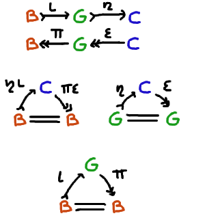
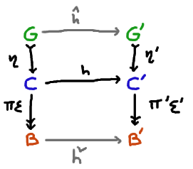
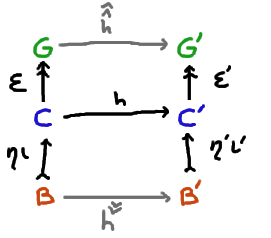

Cache Types
Say a cache type is a triple of types $G, C, B$, with some
morphisms and equations to follow.
But I want to start by describing
rough shape of the example I have in mind is. The type $B$ is
the type of the base state. Think of it as the type that
describes cells in a spreadsheet that have actual, concrete
numbers in them. The type $C$ is the cache state, for example
maybe $B \x (D + 1)$. It represents the whole spreadsheet — or, well, a funny kind of lazy
spreadsheet — where the base state is there, and also a "cell with a formula", a computation
that computes something derived from the base state, of type $D$. Suppose $f : B \to D$ is
the name of that computation. We say $D + 1$ because
we want to talk about times when the cache is empty, or otherwise invalidated. Finally,
$G$ is the type of good cache states. For example, $G$ can be set to $B \x 2$. It represents
the fact that the cache can be empty or full, but records the fact that if the cache is
full, there's only one correct value for it to have. The type $C = B \x (D + 1)$ includes
lots of inconsistent cache states like $( b, \mathsf{Just}\ d)$, when
$d \ne f(b)$.
So the morphisms and equations we require are the following:

We require two retraction pairs, whose composite is also an retraction.
In our example, the injection $\iota : B \to B \x 2$ by always choosing the element $\mathsf{false}$ of 2;
the initial state of the cache is empty. The injection $\eta : B \x 2 \to B \x (D + 1)$ is defined by
\[ \eta(b, \mathsf{true}) = ( b, \mathsf{Just}(f(b)) ) \]
\[ \eta(b, \mathsf{false}) = ( b, \mathsf{None} ) \]
It describes what a good cache state is, concretely. Either a full cache, whose contents are consistent with the base
state, or an empty cache. The projection $\epsilon : B \x (D + 1) \to B \x 2$ simply throws away the data
in $D$ and just returns the bit of whether the cache is full. The projection $\pi : B \x 2 \to B$ throws away even
that bit of information.
Morphisms
The point of setting up these definitions is to be able to talk about the morphisms in a category whose
objects are cache types. I'll say a morphism from $(G, C, B)$ to $(G', C', B')$ is a triple
of morphisms that make the following diagram commute:

The important one is $h$; because of the other arrows being mono/epi, the morphisms
$\hat h$ and $\check h$ are uniquely determined, if any such arrows exist and fit into
their place in the commutative diagram.
Let's first talk about why these commutative squares are being required, and then
why the squares that aren't required, aren't required.
The top square essentially says: If we have a good cache state,
and we inject that into $C$, and do some consistent computation to
it, it should also result in a good state. This is a sensible abstract "preserves a property"
kind of requirement when we think of $C$ as the implementation type of the caching
discipline. The morphism $h$ is the actual concrete program we run, and the
potential existence of $\hat h$ is a mathematical abstraction guaranteeing (part of) its correctness.
The bottom square is saying: if we do some computation and lose the cache, we should
still have the same underlying data as if we had lost the cache earlier, and done
the underlying comptuation on the base state.
Now for the squares we didn't require:

The top square of this would require that our main computation $h$ does not depend
on the value in of the cache, that it can be represented as merely a function $G \to G'$. But this
deprives us from expressing computations whose intention is to use a cached value, as opposed to
recomputing it from the base state. And that's point of this whole exercise!
The bottom square is telling us that if we initialize the
cache from some base state, and do some computation with it, that
has to be the same as doing the "raw" computation, and then
initializing the cache. This would undesirably prevent us from
doing computations that, e.g. do nothing but simply transition the
cache from empty to full by performing the expensive operation
whose output we want cached.
Expressing Morphisms Another Way
Instead of demanding triples, we can express the existence of
$\hat h$ and $\check h$ equationally in terms of $h$. We can require
- $h \eta = \eta' \epsilon' h \eta $
- $\pi' \epsilon' h = \pi' \epsilon' h \eta \iota \pi \epsilon$
because when this happens we can set
- $\hat h = \epsilon' h \eta $
- $\check h = \pi' \epsilon' h \eta \iota $
Conversely, whenever we have $\hat h$ and $\check h$ satisfying the diagram above
- $\eta' \hat h = h \eta $
- $\check h \pi \epsilon = \pi' \epsilon' h $
it's just a matter of composing on
- $\epsilon' \eta' \hat h = \epsilon' h \eta $
- $\check h \pi \epsilon \eta \iota= \pi' \epsilon' h \eta \iota$
and then using the retraction equations to get back the requirements above.
Resummary
The category of cache-types has for objects triples of sets $(G, C, B)$ such that
and whose morphisms $(G, C, B) \to (G', C', B')$ are morphisms $h : C \to C'$ such that
- $h \eta = \eta' \epsilon' h \eta $
- $\pi' \epsilon' h = \pi' \epsilon' h \eta \iota \pi \epsilon$
Example
If we have a morphism $u : B \to B$, then a slightly nontrivial
example of a morphism from $((B \x 2), (B \x (D + 1)), B)$ to itself
is
\[ v(b, d) = \mathop\mathbf{if} b = u(b) \mathop\mathbf{then} (b, d) \mathop\mathbf{then} (u(b), \mathsf{Just}(f(u(b)))\]
The fact that the equations are satisfied can be checked without any cleverness.